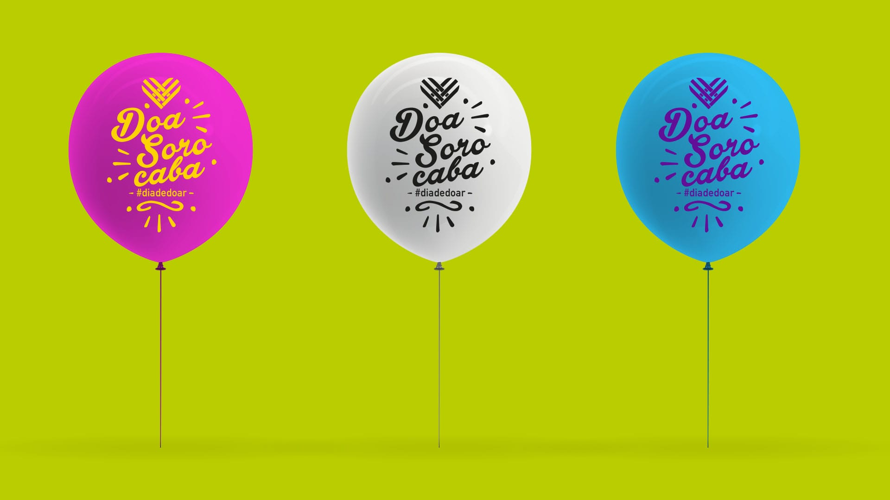

O #diadedoar chegou ao Brasil em 2013 para promover a solidariedade e a cultura da doação. Se a praxe é que organizações da sociedade civil assumam o papel de principais catalisadoras de ações durante a data, em Sorocaba, a campanha fugiu do roteiro habitual. A cidade do interior de São Paulo inovou duplamente: realizou uma mobilização de âmbito municipal e “sem dia para terminar”.
Uma das medidas foi tornar fixo o ponto de doação instalado no Pátio Cianê Shopping na edição 2017 do evento. “Vinte e oito de novembro foi para celebrar a solidariedade, mas não podemos esquecer do resto do ano. Queríamos estimular a doação também fora da data”, explica Raquel Barbosa, coordenadora do Laboratório de Inovação Social da Faculdade de Engenharia de Sorocaba e uma das idealizadoras da mobilização.
Foi criado também um site para intermediar o contato entre organizações e doadores. “A ideia era que as pessoas dissessem o que tinham para oferecer e fossem, então, apresentadas a organizações que precisavam daquilo. Até porque, não incentivamos apenas a doação em dinheiro”, diz.
O plano é que a página permaneça no ar e que os resultados dessa intermediação sejam calculados em breve e passem por monitoramento periódico.
Mas essas não foram as únicas marcas permanentes que a campanha deixou em Sorocaba. “Trouxemos para perto do evento o vereador Péricles Régis (PMDB), que abraçou a causa e propôs uma lei para inserir oficialmente o #diadedoar no calendário do município. A homenagem foi aprovada em 30 de novembro”, conta Raquel, que também conseguiu convencer uma deputada estadual a propor projeto semelhante para o estado — a matéria está em tramitação desde agosto.
Exemplo de Baltimore
“Em 2014 e 2015, o #diadedoar foi celebrado de maneira tímida por aqui. Numa conversa com o João Paulo Vergueiro, diretor-executivo da Associação Brasileira de Captadores de Recursos, ele sugeriu que olhássemos para Baltimore”, lembra a coordenadora do Laboratório de Inovação Social.
A cidade norte-america tornou-se um caso de sucesso no #GivingTuesday, movimento iniciado em 2012 nos Estados Unidos e que acontece atualmente em 35 países, inspirando também o #diadedoar brasileiro.
“Fomos atrás do site de Baltimore. A ideia lá é colocar a cidade como a mais solidária do país. Nós queríamos algo diferente: mostrar para todo mundo a cultura de solidariedade que já existia em Sorocaba. A intenção não era ganhar de ninguém.”
Na época, Raquel estava no Instituto Alexandre e Heloisa Beldi, que tem como objetivo fortalecer a capacidade de gestão de organizações da sociedade civil. “Trabalhávamos em rede com outras instituições, e incentivamos que elas aderissem ao #diadedoar. Conseguimos que muitas pessoas na cidade falassem sobre a data.”
Tanto no ano passado quanto neste, o movimento contou com uma ajuda fundamental. “A agência de publicidade Atua criou o material de campanha e conseguiu outdoors e inserções em rádio e televisão. Eles também foram atrás de influenciadores digitais locais.”
Criou-se ainda a hashtag #DoaSorocaba —usada junto com a #diadedoar —, recurso que ajudou a dar uma identidade própria à campanha local e a monitorar o alcance das ações nas redes sociais.
Mudança de estratégia
A grande mudança em 2017 se deu na estratégia de mobilização. “Fizemos um evento de lançamento da campanha municipal no dia 23 de outubro, mas, dessa vez, decidimos diversificar o público mais cativo das ONGs. Convidamos em torno de 150 pessoas, entre representantes do poder público e de empresas, e assim fizemos um ‘barulho’ maior”, explica Raquel.
Um bom termômetro desse “barulho” foi a quantidade de interações na página do movimento no Facebook. Em 2016, contabilizou-se 1.986, entre comentários, compartilhamentos e reações (curtidas, por exemplo). Já em 2017, o número saltou para 4.372 interações.
Planejamento
O #diadedoar 2018 ainda está longe, mas os planos para a campanha já começam a ser desenhados. “Queremos colocar as empresas, o poder público e as ONGs — ou seja, os três setores — para conversarem em prol da sociedade. Também buscaremos vários modos de participação que possam se estender no tempo, para além da data, como já conseguimos neste ano, com o ponto de doação.”
Feliz com os frutos que o #DoeSorocaba rendeu até agora, Raquel avalia a iniciativa como “uma inovação, uma campanha democrática, descentralizada, que pode envolver todos os stakeholders da cidade."
